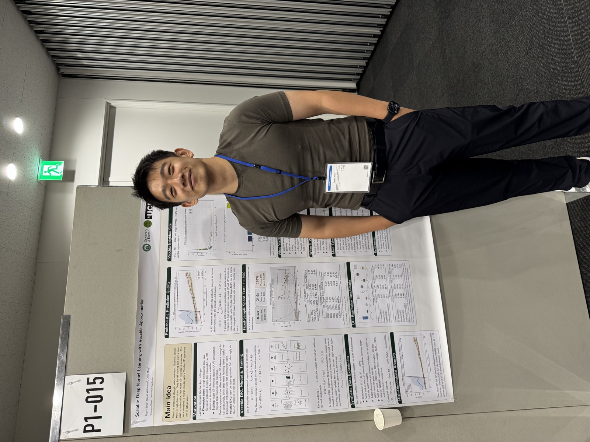

UK-wide Biodiversity Model Emulation
I am working on P3, a new Defra project focused on emulating a biodiversity model for the whole UK.
This is the first national-scale biodiversity model emulation task.
My doctoral research in statistics at the University of Exeter focuses on Gaussian processes, Vecchia approximations, statistical computing, and high-performance computing. My applied work involves statistical emulators and machine-learning models for agricultural and environmental research.

Scalable deep kernel learning with Vecchia approximation
Presented at ISBA 2026 in Nagoya, Japan.
I am working on P3, a new Defra project focused on emulating a biodiversity model for the whole UK.
This is the first national-scale biodiversity model emulation task.
Developed a modelling pipeline linking agricultural uptake and biodiversity models, with reproducible datasets and outputs for downstream analysis.
Fitted a Gaussian process emulator of the linked workflow to accelerate exploration of model inputs, scenarios, and behaviour. Automated health checks flag failed runs, data-quality issues, and unexpected outputs.
Built a Transformer–MLP encoder–decoder as a fast surrogate for a Bayesian optimisation model for farm management.
Developed scalable preprocessing, training, hyperparameter tuning, and evaluation workflows for time-series and spatially structured agricultural data. The work involved collaboration with farm scientists, economists, and biologists.
Attended AI UK in London in 2024, representing the ADDTREES project.